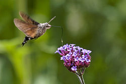

Чешуекры́лые, или ба́бочки, мотыльки́, мо́ли (Lepidóptera Linnaeus, 1758 от др.-греч. λεπίς, род. п. λεπίδος — чешуя и πτερόν — крыло) — отряд насекомых с полным превращением, наиболее характерная особенность представителей которого — наличие густого покрова хитиновых чешуек (уплощённых волосков) на передних и задних крыльях (при этом чешуйки расположены как на жилках, так и на крыловой пластинке между ними). Для большинства видов характерен специализированный сосущий ротовой аппарат с хоботком, образованным удлинёнными лопастями нижней челюсти. Форма и размах крыльев весьма разнообразны: от 2 мм до 28 см.
Развитие с полным превращением: имеются стадии яйца, личинки (называемой гусеницей), куколки и имаго. Личинка червеобразная, с недоразвитыми брюшными ногами, мощно склеротизованными покровами головы, грызущим ротовым аппаратом и парными шелкоотделительными железами, выделения из которых, при соприкосновении с воздухом, образуют шёлковую нить.
Чешуекрылые, ископаемые останки которых известны начиная с юрского периода, в настоящее время являются одним из наиболее богатых видами отрядов насекомых — в отряде насчитывается более 158 000 видов. Представители отряда распространены на всех континентах, за исключением Антарктиды.

Отряд чешуекрылых по видовому разнообразию несомненно выделяется среди таксонов подобного ранга. Чешуекрылые являются одной из крупнейших групп насекомых, включающей в себя 158 570 видов, включая 147 вымерших видов, по состоянию на август 2013 года. Предполагается, что до 100 000 видов остаются всё ещё не известными науке и, таким образом, общее число существующих на планете видов чешуекрылых может быть оценено приблизительно в 200 000 — 225 000 видов. На территории России встречается 2166 родов и 8879 видов.
Чешуекрылые являются весьма разнообразными, а большинство их видов плохо изученными. Некоторые из описанных видов известны по находкам из одной единственной местности либо даже по единственному экземпляру. Истинная оценка общего количества существующих видов никогда не будет известна, потому что многие виды вымерли ещё до их обнаружения. Систематика бабочек, представленная в различных работах, отражает различные взгляды их авторов и является, вне всякого сомнения, дискуссионной. Имеются споры, посвященные систематическому положению или необходимости сохранения статуса некоторых подвидов или видов. Исследования ДНК свидетельствуют, что некоторые из известных в настоящее время видов должны быть разделены. Хорошо известным примером является случай, когда на первый взгляд идентичные Colias alfacariensis и Colias hyale, ранее считавшиеся одним видом, были разделены на два, после того как были обнаружены существенные различия в строении их гусениц и куколок.